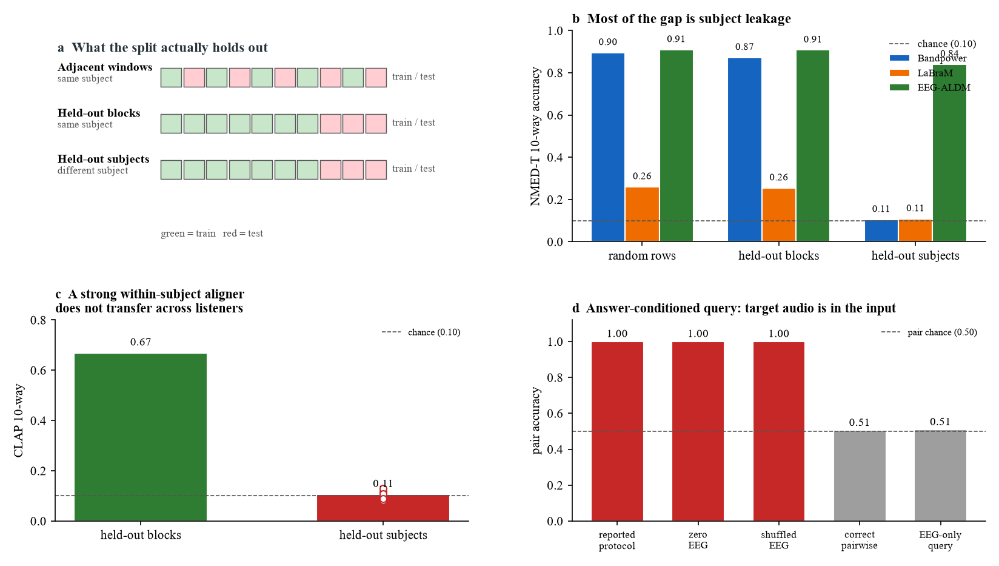
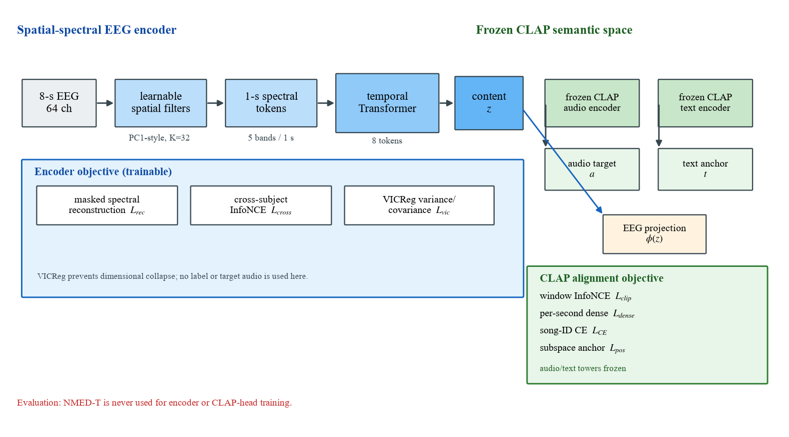
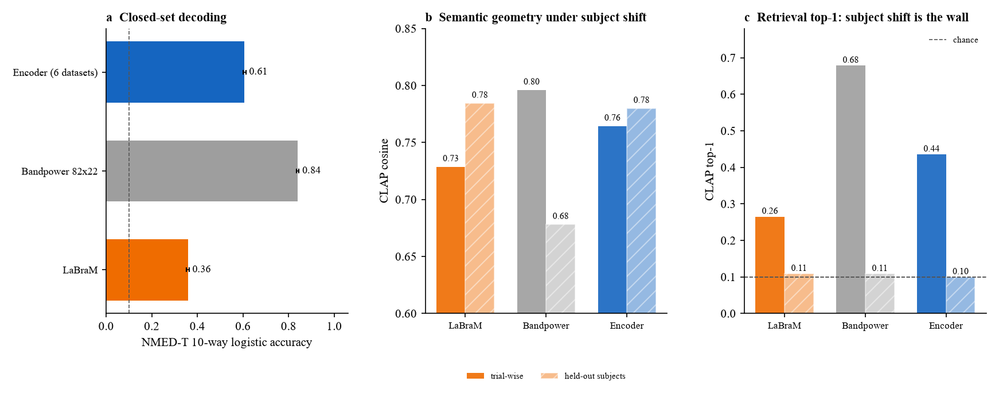
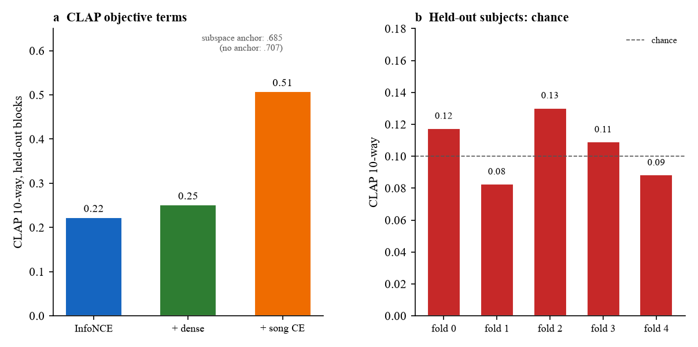

Beyond generic EEG foundation models. A spatial-spectral encoder for auditory EEG.
A compact encoder trained on six auditory datasets (195 dataset-subject entries,
69,108 eight-second windows, 153.6 hours) and evaluated on NMED-T, which the encoder
never sees. The headline is deliberately narrow: only the encoder is target-unseen; the linear
and CLAP probes are fit on NMED-T training halves. Under that protocol the encoder beats frozen LaBraM
on trial-wise decoding and semantic top-1, while band-power remains the stronger closed-set label baseline.
No cross-subject top-1 claim: held-out listeners stay at chance.
We varied only the split on NMED-T, keeping the same windows and band-power features.
Random rows (0.896) and held-out blocks (0.873) keep the listener in training; held-out subjects
collapse to 0.106. A short-window study reports 88.69% under a within-participant random split
(1-s inputs, random time chunks); that is a within-listener number, not cross-subject evidence.
Fig 1 · protocol pitfalls

(a) What each split holds out. (b) NMED-T 10-way accuracy:
band-power 0.896 random rows, 0.873 held-out blocks, 0.106 held-out subjects.
(c) A CLAP alignment head reaches 0.669 on held-out blocks but 0.105 on held-out subjects.
(d) Answer-conditioned audit on the released implementation: real, zeroed, and shuffled EEG
all report 1.000 pair accuracy; the label-free pairwise and EEG-only variants are near 0.50.
This is a protocol observation, not an allegation of intent.
Minimum controls we recommend. Split by listener, not by window; report a
held-out-block split to quantify adjacent-window optimism; include zero-EEG and shuffled-EEG controls;
and for any answer-conditioned query, report label-free pairwise and EEG-only variants. Each control
changes the conclusion in the cases we examined.
Method: spatial filtering + frozen CLAP alignment
The encoder is 1.14M parameters: K = 32 learnable spatial filters, one-second spectral
tokens (five bands), a four-layer temporal Transformer, and a CLAP alignment head. The CLAP audio and
text towers are frozen; only the EEG projection is trained. The four alignment terms are window
InfoNCE, per-second dense InfoNCE, a song-ID auxiliary, and a subspace placement anchor; a
VICReg-style variance-covariance term on the encoder prevents dimensional collapse.
Fig 2 · method and losses

Encoder objective: masked spectral reconstruction, cross-subject contrastive,
VICReg. CLAP alignment objective: window InfoNCE, per-second dense, song-ID CE, subspace
anchor. The four-term CLAP head is analyzed on NMED-T under block/subject splits; it is not part
of the six-dataset encoder pretraining.
Results on unseen NMED-T
The encoder is trained without NMED-T. The probes are fit on NMED-T training halves
(trial-wise) or on other listeners (subject-held-out). Band-power is a strong label-feature baseline;
the encoder is not a replacement for it. The encoder's advantage is semantic stability: under subject
shift, band-power CLAP cosine drops 0.796 → 0.678, while the encoder changes 0.764 → 0.780.
Fig 3 · main results

(a) Closed-set 10-way: band-power 0.840, encoder 0.607 ± 0.006, LaBraM 0.358.
(b) CLAP cosine trial-wise vs held-out subjects. (c) CLAP top-1: all subject-held-out
values are at chance (.10). No cross-subject retrieval is claimed.
method
NMED 10-way ↑
CLAP trial cos / top-1 ↑
CLAP subject cos / top-1 ↑
LaBraM-200 (frozen)
0.358
0.729 / 0.265
0.784 / 0.109
Band-power 82×22
0.840
0.796 / 0.678
0.678 / 0.108
Encoder (6 datasets)
0.607 ± 0.006
0.764 / 0.435
0.780 / 0.099
Ablations and the cross-listener wall
The dense per-second term is the strongest single addition to the CLAP objective.
The song-ID auxiliary raises the closed-set number but can select a checkpoint that is not the best
for CLAP retrieval, so it is reported separately. The subspace anchor is a geometry control, not a
performance claim. A strong within-listener CLAP head still falls to chance on held-out subjects.
Fig 4 · ablation and subject-held-out control

(a) Window InfoNCE .223 → + dense .252 → + song CE .508 on held-out blocks.
(b) Subject-held-out folds .083–.130, mean .106 (chance .10). The CLAP alignment head is
analyzed on NMED-T under block/subject splits; it is not part of the six-dataset encoder pretraining.
What was trained on
Six auditory datasets, all cut into non-overlapping 8-s windows. SparrKULee is speech;
the other five are music or natural-sound listening. SparrKULee is mapped from BioSemi64 to the 19
standard 10–20 channels and resampled 120 → 200 Hz. NMED-T is never used for encoder training.
dataset
subjects
windows
approx. hours
role
CIRE
35
8,400
18.7
train
KUL
16
11,968
26.6
train
DTU
18
6,480
14.4
train
MUSIN-G
20
3,760
8.4
train
ds002725
21
4,991
11.1
train
SparrKULee
85
33,509
74.5
train (train/val only)
total
195
69,108
153.6
NMED-T held out entirely
Boundaries
Only the encoder is target-unseen. The linear and CLAP probes are fit on NMED-T training
halves; this is not a zero-shot pipeline.
No cross-subject top-1. Subject-held-out top-1 is at chance for every method.
Band-power wins closed-set decoding. We do not claim state-of-the-art classification or a
replacement for high-dimensional spectral features.
No phase or raw-waveform claim. Raw-patch/codebook pilots are negative and the
phase-randomization audit does not support that claim.
No data-scaling claim. At 153.6 hours we do not claim data or model scaling.
Sparr channel mapping is an assumption. BioSemi64 order → 19 10–20 channels.
Code. Encoder, evaluation, protocol audit and figure scripts:
github.com/ZZC-MK2000/promptmix-eeg.
The working manuscript is not linked here; the page reports only the results above.